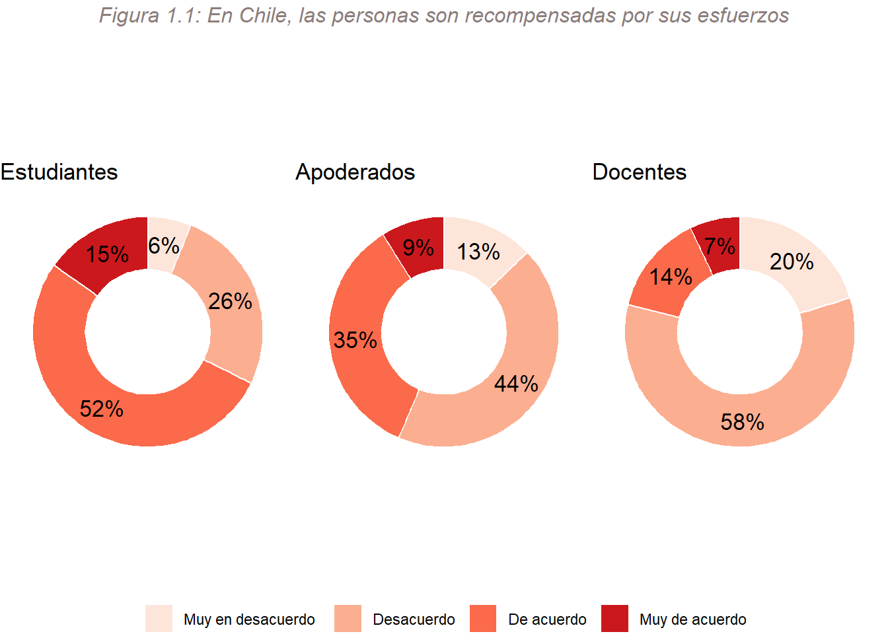
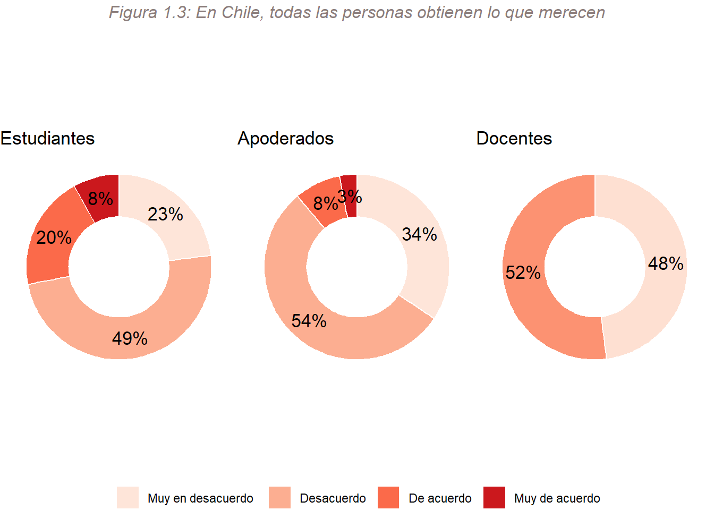
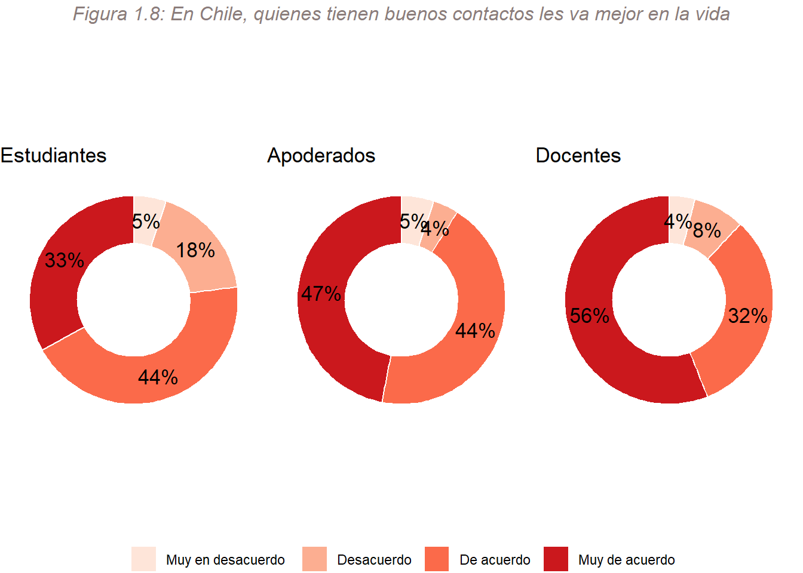

Documento devolución colegios
Introducción
Se estructurá de acuerdo a tres grandes módulos
Esta es la idea para cuando tengamos todos los datos.
Reporte metodológico
1. Meritocracia
1.1. Meritocracia en la sociedad
1.1.1. Creencias en la meritocracia
Percepciones
- Respecto a criterios de mérito individual
Esfuerzo en la sociedad chilena:
En primer lugar, se observan claras diferencias entre adultos y estudiantes. Tanto profesores como apoderados estan en desacuerdo con la frase y, específicamente, los apoderados están más de acuerdo que los docentes. Así, los estudiantes parecen estar más de acuerdo con que las personas en el país son recompensadas por sus esfuerzos (52%). Aún así, ninguno de los tres actores esta muy de acuerdo con este criterio de mérito individual.
Talento (inteligencia y habilidad) en la sociedad chilena:

Si bien los tres actores están de acuerdo con la frase y, por ende, creen en el mérito en base al talento, los docentes están más de acuerdo con la afirmación. Acumulando el 89% de sus respuestas en las categorías “Muy de acuerdo” y “De acuerdo”.
- Respecto al mérito en la sociedad chilena:

Los docentes se muestran en desacuerdo en su totalidad con la idea de que las personas son recompensadas por sus méritos en la sociedad chilena. Si bien estudiantes y apoderados también se muestran en su mayoría en desacuerdo, los estudiantes presentan un 20% de acuerdo con la afirmación.
En vista de las diferencias entre estudiantes, apoderados y docentes, se presentará la forma en que se distribyen estas creencias de acuerdo a sus caracteristicas sociodemográficas más relevantes.
En concordancia con la preodminante creencia en la meritocracia de las/los estudiantes, a continuación se observa cómo se expresan dichas creencias conforme al curso en que se encuentran:

Estudiantes de educación básica estan más de acuerdo con ambos criterios individuales de meritocracia en la sociedad que los estudiantes de educación media.
Además, a propósito del predominante desacuerdo de las/los docentes frente a los criterios de mérito individual en la sociedad, se muestra cómo se dsitribuyen estas creencias en función de su género:

Mujeres y otras identidades sexogenéricas están en desacuerdo con la frase sobre el mérito social y con ambos criterios de mérito individual. Contrariamente, los docentes hombres están de acuerdo en un 50.4% con la afirmación sobre el talento en la sociedad.
En cuanto a la distribución por género de los apoderados, se observa lo siguiente:

Las apoderadas están más de acuerdo con el mérito en base al talento en la sociedad y los apoderados con el mérito en base al esfuerzo.
- Respecto a factores no meritocráticos
Estos factores aluden a externalidades del mérito individual como la herencia, los contactos y la suerte. Por ello, se presentan preguntas referidas a la percepción respecto a los logros individuales de las personas que tienen padres ricos, buenos contactos y mejores oportunidades en la vida.
Padres ricos

Buenos contactos

Oportunidades